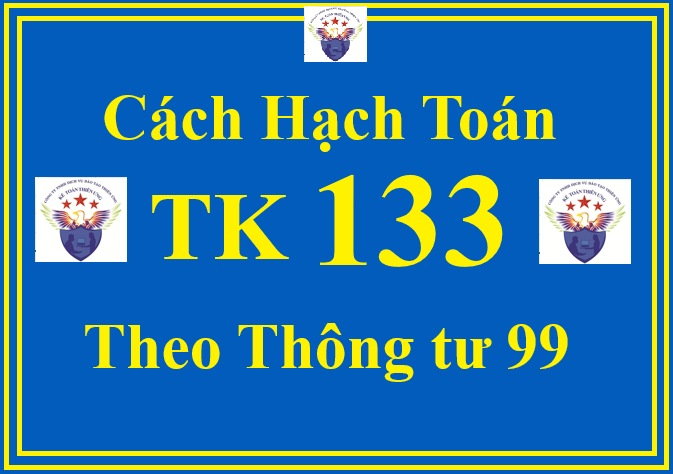

Hướng dẫn cách định khoản hạch toán Tài khoản 133 - Thuế GTGT được khấu trừ theo Thông tư 99/2025/TT-BTC (áp dụng từ ngày 01/01/2026, thay thế Thông tư 200)
Tài khoản 133 dùng để phản ánh số thuế GTGT đầu vào được khấu trừ, đã khấu trừ và còn được khấu trừ của doanh nghiệp.
Doanh nghiệp phải hạch toán riêng thuế GTGT đầu vào được khấu trừ và thuế GTGT đầu vào không được khấu trừ. Trường hợp không thể hạch toán riêng được thì số thuế GTGT đầu vào được hạch toán vào Tài khoản 133. Cuối kỳ, doanh nghiệp phải xác định số thuế GTGT được khấu trừ và không được khấu trừ theo quy định của pháp luật về thuế GTGT.
Số thuế GTGT đầu vào không được khấu trừ được tính vào giá trị tài sản được mua, giá vốn của hàng bán ra hoặc chi phí sản xuất, kinh doanh tùy theo từng trường hợp cụ thể.
Việc xác định số thuế GTGT đầu vào được khấu trừ, kê khai, quyết toán, nộp thuế phải tuân thủ theo đúng quy định của pháp luật về thuế GTGT.
Doanh nghiệp phải hạch toán riêng thuế GTGT đầu vào được khấu trừ và thuế GTGT đầu vào không được khấu trừ. Trường hợp không thể hạch toán riêng được thì số thuế GTGT đầu vào được hạch toán vào Tài khoản 133. Cuối kỳ, doanh nghiệp phải xác định số thuế GTGT được khấu trừ và không được khấu trừ theo quy định của pháp luật về thuế GTGT.
Số thuế GTGT đầu vào không được khấu trừ được tính vào giá trị tài sản được mua, giá vốn của hàng bán ra hoặc chi phí sản xuất, kinh doanh tùy theo từng trường hợp cụ thể.
Việc xác định số thuế GTGT đầu vào được khấu trừ, kê khai, quyết toán, nộp thuế phải tuân thủ theo đúng quy định của pháp luật về thuế GTGT.
1. Kết cấu và nội dung phản ánh của Tài khoản 133 - Thuế GTGT được khấu trừ theo Thông tư 99/2025/TT-BTC
| Bên Nợ: | Bên Có: |
| Số thuế GTGT đầu vào được khấu trừ. |
- Số thuế GTGT đầu vào đã khấu trừ; - Kết chuyển số thuế GTGT đầu vào không được khấu trừ; - Thuế GTGT đầu vào của vật tư, hàng hóa, dịch vụ mua vào nhưng đã trả lại, được giảm giá; - Số thuế GTGT đầu vào đã được hoàn lại. |
|
Số dư bên Nợ: Số thuế GTGT đầu vào còn được khấu trừ, số thuế GTGT đầu vào được hoàn lại nhưng NSNN chưa hoàn trả tại thời điểm kết thúc kỳ kế toán. |
Tài khoản 133 - Thuế GTGT được khấu trừ, có 2 tài khoản cấp 2:
+ Tài khoản 1331 - Thuế GTGT được khấu trừ của hàng hóa, dịch vụ: Phản ánh thuế GTGT đầu vào được khấu trừ của vật tư, hàng hóa, dịch vụ mua ngoài dùng vào sản xuất, kinh doanh hàng hóa, dịch vụ thuộc đối tượng chịu thuế GTGT tính theo phương pháp khấu trừ thuế.
+ Tài khoản 1332 - Thuế GTGT được khấu trừ của TSCĐ: Phản ánh thuế GTGT đầu vào của hoạt động đầu tư, mua sắm TSCĐ, BĐSĐT dùng vào hoạt động sản xuất, kinh doanh hàng hóa, dịch vụ thuộc đối tượng chịu thuế GTGT tính theo phương pháp khấu trừ thuế.
+ Tài khoản 1332 - Thuế GTGT được khấu trừ của TSCĐ: Phản ánh thuế GTGT đầu vào của hoạt động đầu tư, mua sắm TSCĐ, BĐSĐT dùng vào hoạt động sản xuất, kinh doanh hàng hóa, dịch vụ thuộc đối tượng chịu thuế GTGT tính theo phương pháp khấu trừ thuế.
2. Cách định khoản hạch toán các nghiệp vụ liên quan đến Tài khoản 133 - Thuế GTGT được khấu trừ theo Thông tư 99/2025/TT-BTC
2.1. Khi mua hàng tồn kho, TSCĐ, BĐSĐT, ghi:
Nợ các TK 152, 153, 156, 211, 213, 217,...
Nợ TK 133 - Thuế GTGT được khấu trừ (1331, 1332) (nếu có)
Có các TK 111, 112, 331,... (tổng giá thanh toán).
2.2. Khi mua vật tư, hàng hóa, dịch vụ dùng ngay vào sản xuất, kinh doanh, ghi:

Nợ các TK 241, 242, 621, 623, 627, 641, 642,...
Nợ TK 133 - Thuế GTGT được khấu trừ (1331) (nếu có)
Có các TK 111, 112, 331,... (tổng giá thanh toán).
2.3. Khi mua hàng hóa giao bán ngay cho khách hàng (không qua nhập kho), ghi:
Nợ TK 632 - Giá vốn hàng bán
Nợ TK 133 - Thuế GTGT được khấu trừ (1331) (nếu có)
Có các TK 111, 112, 331,... (tổng giá thanh toán).
2.4. Khi nhập khẩu vật tư, hàng hóa, TSCĐ:
- Doanh nghiệp phản ánh giá trị vật tư, hàng hóa, TSCĐ nhập khẩu bao gồm tổng số tiền phải thanh toán cho người bán (theo tỷ giá giao dịch thực tế), thuế nhập khẩu, thuế tiêu thụ đặc biệt, thuế bảo vệ môi trường phải nộp, chi phí vận chuyển (nếu có), ghi:
Nợ các TK 152, 153, 156, 211,...
Có TK 3331 - Thuế GTGT phải nộp (33312) (nếu thuế GTGT đầu vào của hàng nhập khẩu không được khấu trừ)
Có TK 3332 - Thuế tiêu thụ đặc biệt (nếu có)
Có TK 3333 - Thuế xuất, nhập khẩu (chi tiết thuế nhập khẩu)
Có TK 33381 - Thuế Bảo vệ môi trường (nếu có)
Có các TK 111, 112, 331,...
Có TK 3332 - Thuế tiêu thụ đặc biệt (nếu có)
Có TK 3333 - Thuế xuất, nhập khẩu (chi tiết thuế nhập khẩu)
Có TK 33381 - Thuế Bảo vệ môi trường (nếu có)
Có các TK 111, 112, 331,...
- Nếu thuế GTGT đầu vào của hàng nhập khẩu được khấu trừ, ghi:
Nợ TK 133 - Thuế GTGT được khấu trừ (1331, 1332)
Có TK 333 - Thuế và các khoản phải nộp Nhà nước (33312).
2.5. Trường hợp hàng đã mua và đã trả lại người bán hoặc hàng đã mua được giảm giá do kém, mất phẩm chất: Căn cứ vào chứng từ xuất hàng trả lại cho bên bán và các chứng từ liên quan, doanh nghiệp phản ánh giá trị hàng đã mua và đã trả lại người bán hoặc hàng đã mua được giảm giá, thuế GTGT đầu vào không được khấu trừ, ghi:
Nợ các TK 111, 112, 331 (tổng giá thanh toán)
Có TK 133 - Thuế GTGT được khấu trừ (thuế GTGT đầu vào của hàng mua trả lại hoặc được giảm giá)
Có các TK 152, 153, 156, 211,... (giá mua chưa có thuế GTGT).
Có các TK 152, 153, 156, 211,... (giá mua chưa có thuế GTGT).
2.6. Trường hợp không hạch toán riêng được thuế GTGT đầu vào được khấu trừ, không được khấu trừ:
a) Khi mua vật tư, hàng hóa, TSCĐ, ghi:
Nợ các TK 152, 153, 156, 211, 213 (giá mua chưa có thuế GTGT)
Nợ TK 133 - Thuế GTGT được khấu trừ (thuế GTGT đầu vào)
Có các TK 111, 112, 331,...
b) Cuối kỳ, doanh nghiệp tính và xác định thuế GTGT đầu vào được khấu trừ, không được khấu trừ theo quy định của pháp luật về thuế GTGT. Đối với số thuế GTGT đầu vào không được khấu trừ thì được tính vào giá trị tài sản được mua, giá vốn của hàng bán ra hoặc chi phí sản xuất, kinh doanh tùy theo từng trường hợp cụ thể, ghi:
Nợ các TK 152, 156, 211, 627, 632, 641, 642,...
Có TK 133 - Thuế GTGT được khấu trừ (1331).
2.7. Vật tư, hàng hóa, TSCĐ mua vào bị tổn thất do thiên tai, hoả hoạn, bị mất, việc khấu trừ thuế GTGT đầu vào được thực hiện theo quy định của pháp luật về thuế. Nếu thuế GTGT đầu vào của số tài sản này không được khấu trừ:
+ Nếu chưa xác định được nguyên nhân chờ xử lý, ghi:
Nợ TK 138 - Phải thu khác (1381)
Có TK 133 - Thuế GTGT được khấu trừ (1331, 1332).
+ Khi có quyết định xử lý của cấp có thẩm quyền về số thu bồi thường của các tổ chức, cá nhân, ghi:
Nợ các TK 111, 112, 334,... (số thu bồi thường)
Nợ TK 632 - Giá vốn hàng bán (nếu được tính vào chi phí)
Có TK 138 - Phải thu khác (1381)
Có TK 133 - Thuế GTGT được khấu trừ (nếu xác định được nguyên nhân và có quyết định xử lý ngay).
Có TK 133 - Thuế GTGT được khấu trừ (nếu xác định được nguyên nhân và có quyết định xử lý ngay).
2.8. Cuối kỳ, doanh nghiệp xác định số thuế GTGT đầu vào được khấu trừ vào số thuế GTGT đầu ra khi xác định số thuế GTGT phải nộp trong kỳ, ghi:
Nợ TK 3331 - Thuế GTGT phải nộp (33311)
Có TK 133 - Thuế GTGT được khấu trừ.
2.9. Khi được hoàn thuế GTGT đầu vào của hàng hóa, dịch vụ, ghi:
Nợ các TK 111, 112,....
Có TK 133 - Thuế GTGT được khấu trừ (1331).